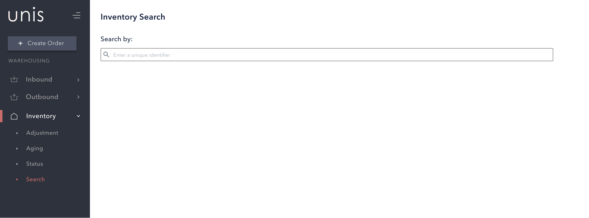
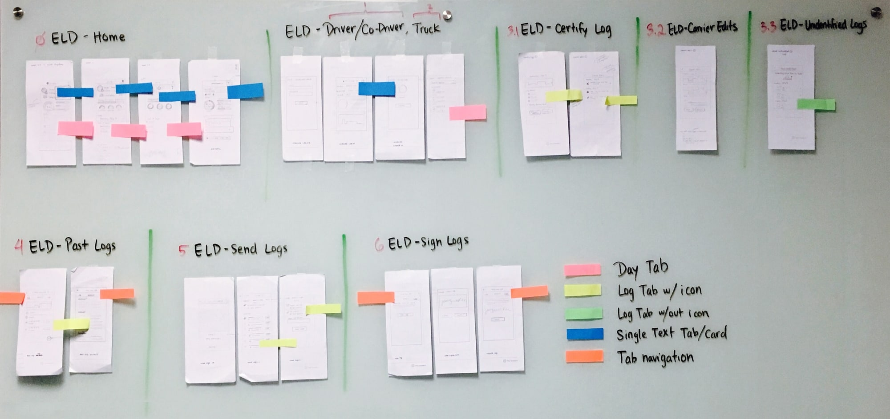
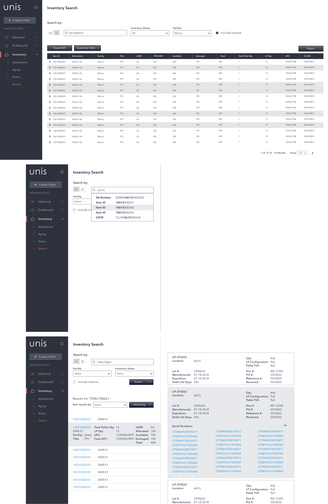

Project Details
Type: Warehouse Management System (WMS), Enterprise
Company: UNIS
Platform: Web, Desktop Client
Started: Feb 2019
Tools: Figma, Jira, Trello
Team: 1 UX/UI Designers, 1 Front-End Dev, 1 Full-Stack Dev, 2 Back-end Eng, 1 Business Analyst, 1 Product Manager
Summary
We rebuilt our search and filter solution in our warehouse management system (WMS) to fit the flow for Sales, Customer Service Representatives, Warehouse Operations, and Inventory Control And Procurement Managers, under the logistics and supply chain industry.
Searching and filter formerly brought pain points to each user role based on what they were searching for and how they were searching for a specific item in their day-to-day, with limited amount of time. Speed was the greatest priority here!
This case study was last updated in 2019.
Research
Prior to release planning, we had multiple ideas on our roadmap where prioritization needed user input. With those ideas, our engineering team relayed how much effort it would take to hypothetically put them into development.
In collaboration with another designer, we spent time shadowing our users to list the day-to-day common workflows. To go beyond and put ourselves further in their shoes, we spent half our days training as if we were their role and helping them when possible. Not to the extent where we got to drive a forklift but to put on the highlighter warehouse vests and scan each palette to make sure the inventory matched up to a fulfillment order.
Then from our user group of 30+ participants, each participant got a certain number of votes and tallied which feature we should work on next as a consideration to their needs. After they were done voting, we held a roundtable discussion (with refreshments!) asking why they made their vote.
Based on the discussion and votes, we went ahead with focusing on not adding any features, but rather improving the current system's search capabilities.

The original inventory search at the time was quickly developed without UX consulting.
Persona
From our day-to-day walkthroughs and interviewing each team, we found which roles would be most affected by this feature - one who helps with navigating the status of an inventory (CSR) and one who checks if inventory has been received (Inventory Clerk).
Pain points
From the feedback interviews and discussions, the most encountered pain points relied on the speed and intuitiveness of the current search functionality.
Each palette has a list of items with unique serial numbers in each one, so Inventory Clerks had to quickly scan the items to make sure drivers were receiving the correct palette issued and that there were no mistakes in the packing. On the other hand, CSRs needed to quickly scan a list of inventory identifiers from their paperwork (Driver Name, Lot #, Doc #, Qty, etc) so drivers, when arriving, were quickly matched to the correct palettes to pick up.
Overall, users felt that (1) not enough key inventory information was shown at one place, (2) relied on opening an Excel sheet instead to find the right inventory information than digging through the current portal, and (3) also manually relied on shifting through additional paperwork to match the correct inventory information.
Designs
In a two week sprint, we ideated the possible explorations in lo-fi on how the inventory search can be improved while also mapping out the current user flow. This was done on paper prototypes and whiteboards.

Workflows were mapped out and divided per phases of the driver's journey along with the CSR and Inventory Clerk's workflow.
On the side, we were working with engineers to uncover how the search algorithm could be up to speed with the various inputted attributes and understand the scope of how much of the platform could be searched. We also worked with users what possible filter would be useful - we did not want a separate filter for every identifier only for it not to be useful or accessible.
To keep it within the scope of inventory, the search would retrieve inventory information of all item statuses based on Adjustment (Items that need any changes to its shipment or packing), Aging (Inventory that doesn't sell quickly), and Status (Inactive vs. Active vs. In-Transit).
With users, we then questioned: Would filters even be utilized? What attributes are most relevant to appear in the results? What attributes are quickly scanned first?
Each possible exploration was tested with our user groups then with feedback, the new algorithm took into account the most recent search and when the search bar was activated again, it would suggest the next item number in the palette. That meant when checking each specific item of a palette, users would not have to type the attribute again!
Final Designs
The project took five months from end-to-end. Once released, we received more feedback from our main users with positives and additional insights for improvements that was iterated later in the year. An example would be adding a toggle to switch from table (original) to card view.
Card view was received exceptionally well to CSRs who quickly needed to double-check several categories for one palette at a time without scattering through a table which clashes with tens and hundreds of other palettes. This also helped show all items in a palette in one card for CSRs who quickly needed to scan what's in a palette immediately for last minute loads.
Since the release, it was impactful to see in real time how much of a difference it made in users' workflow. There were less swaps to open Excel, less paperwork scattered across desks, and less re-entering palette identifiers due to the new algorithm.

Sample of hi-fi designs that were implemented